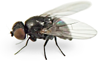

Welcome to the Upper Midwest Stem Insect Survey website
This project documents insects that feed on plant or fungal tissue inside living plant stems and stemlike structures in the Upper MidwestOn this page, the diagonal stem shown in the top left corner is from western Washington state. All other images show creatures from the Upper Midwest, USA..
- Introduction explains the goals and scope of the survey and defines important terms.
- Results summarizes key survey findings, while Browse By Hostplant lists all insects encountered, including hundreds of species of stem borers, stem miners, and local feeders in stems, spanning 5+ insect orders and over 200 host plant genera.
- You can also view my favorite photos, consult the references, learn more about this project, or navigate via the sitemap.
Please enjoy your visit!
--J. van der Linden